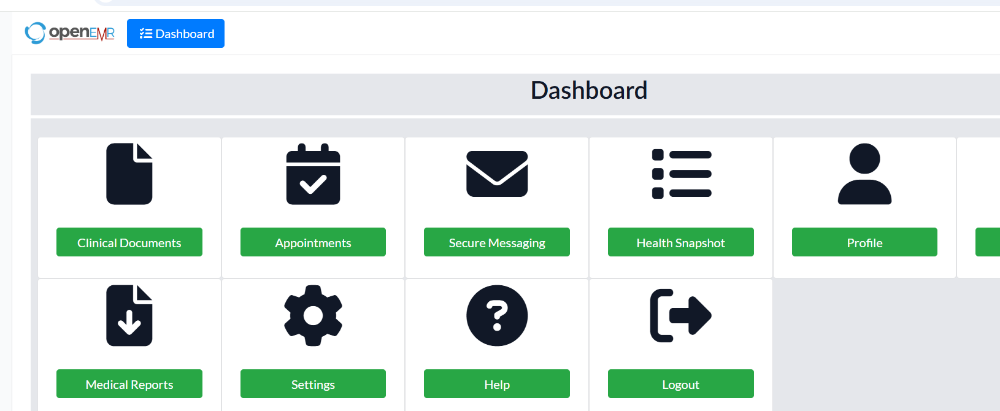

Understand the Dashboard
The dashboard provides access to common areas of the Hospital Management System.
After you log in, the dashboard provides access to key areas of the system, including Clinical Documents, Appointments, Secure Messaging, Health Snapshot, and Profile. Additional options may be available depending on your role and system configuration.

Navigation
Use the navigation controls provided by your role to move between system areas. Available options can differ between user roles.